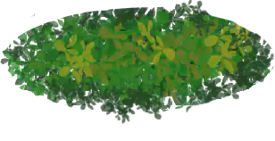
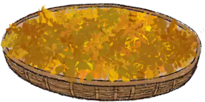

主页
主页 返回
返回摊青：
将采摘下来的茶叶均匀摊在竹匾上，放在通风的地方自然萎凋，平阳黄汤摊青的时间稍长，视天气情况，摊青时间为12、-15小时，最长可超20小时。
杀青：
用铁锅杀青，温度200度，锅底微微显红，就可以投叶了，投叶200克左右，要求用力均匀，翻动要快，抖散结合，杀匀杀透。
闷黄：
趁热把茶叶装进木桶，用棉布盖严，加热至45度左右。闷黄时间3至5小时，其间要注意观察茶叶变黄的情况。

揉捻：
闷黄后趁热揉捻，在湿热作用下有利于揉捻成条。揉捻时先轻后重，时间控制在30分钟以内，（黄芽茶手工制作在炒青时可以边炒边揉。杀青时，待叶质柔软，稍带粘性即可用双手揉搓，用力要轻，防止茶汁挤出，色泽变黑揉捻时间约为10分钟，条形自然弯曲）。
烘焙：
将闷黄揉捻后的茶叶均匀摊放在焙笼上，中心较厚，四周稍薄，叶摊好后，再置于火炉上，手离摊叶5厘米处有热感，10分钟左右，烘至七成干即可。


